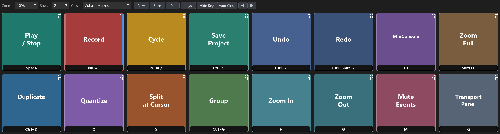
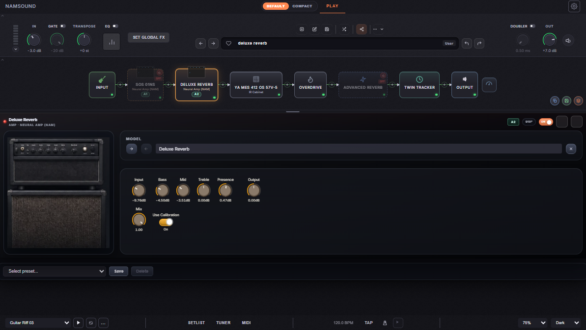
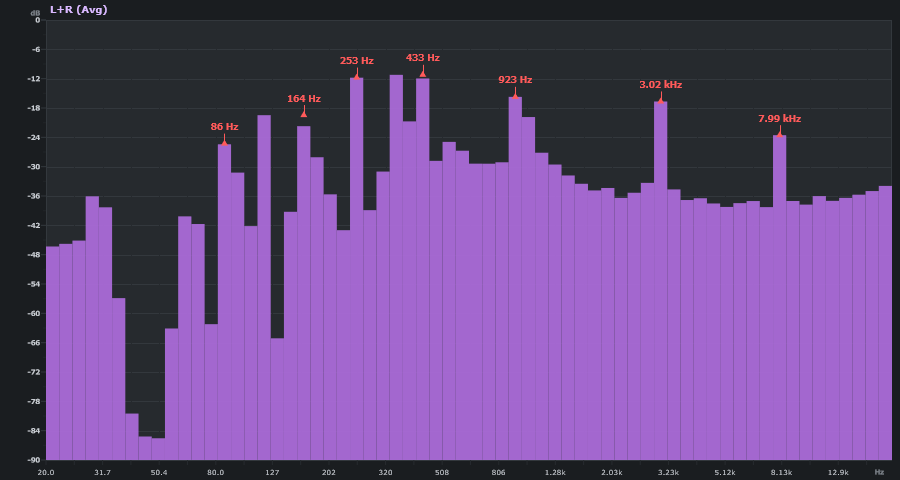
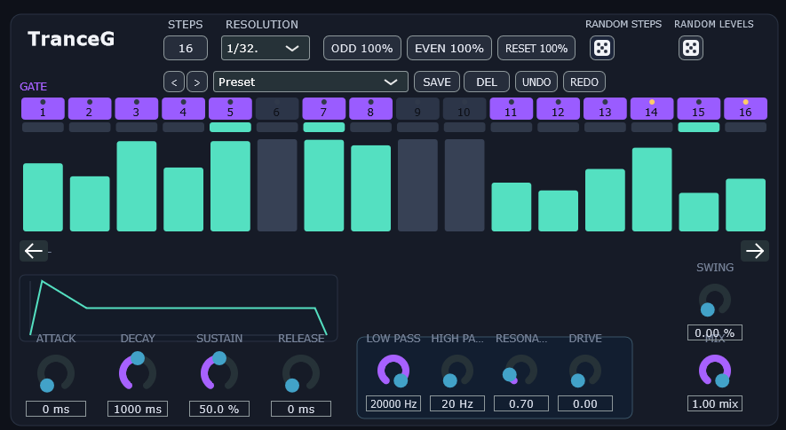

Our Plugins
Crafted for modern music production

BOARD
VST3 Grid Hotkey Plugin. A customizable grid interface for triggering keyboard shortcuts and hotkeys directly in your DAW. Assign letters, numbers, function keys, and modifier combinations to each cell for instant, one-click access.
- Grid up to 30x30 cells
- Full key combo support (Ctrl+Alt+G, etc.)
- Undo/Redo, presets, color themes

NAMSOUND
Guitar and bass effects processor with Neural Amp Modeler (NAM). Direct continuation of Soundshed Guitar — same DSP engine and workflow, rebranded with its own identity. Build arbitrary effect chains including parallel routes, mixers, and multi-preset playback.
- Mod de Soundshed Guitar, mismo motor DSP
- VST3, AU, CLAP, AAX & Standalone
- Scene system, setlists, MIDI & automation

SPECTRO
Real-time spectral analyzer VST3 plugin and standalone application. Professional-grade FFT visualization with a dark, mixbus-style interface. Analyze frequency content with selectable resolution, multiple channel modes, and intelligent peak detection.
- FFT 512–16384, 8–256 bands
- Mid/Side, L+R, and more channel modes
- Peak hold, freeze, crosshair & calibration

TRANCEG
Trance Gate Sequencer generating rhythmic gating patterns with up to 32 steps. Each step has individual activation, level, accent, and linked state. Modulates audio through a configurable ADSR envelope and optional filters, synced to host tempo.
- Up to 32 steps, 16 resolutions
- ADSR envelope + LP/HP/Res/Drive
- Swing, randomizer, shift, undo/redo

CUBASE TOOLS
These tools have been made for Cubase Pro v15 but most of things will work for other versions too.
Cubase Pro menus
Search for Cubase commands, this HTML returns the menu and submenu where that command is placed.
Cubase key commands
Load the key commands file and access all the assigned key combinations and which combinations are free to use.
Cubase Pro preferences
This HTML shows where each parameter is stored in preferences menu.
Plugin manager
Groups by category, sorts and search when the plugin list is long.